Ringkasan
Perubahan
32 item berubah dari 17 screenshot: 3 -, 12 ↑ buff, 10 baru, 7 ↓ nerf
Status di data
10 baru, 2 dihapus (server), 14 diterapkan server · tercatat, 3 sudah di file game, 10 teks, 2 tidak bisa dipastikan
"diterapkan server" = angka baru belum ada di file game (dikirim server). "tercatat" = sudah ada di server_patch.json.
Penyesuaian Commander
| Item | Arah | Perubahan | Angka | Status |
|---|---|---|---|---|
 Lukas Lukas | - | Kami telah merombak skill Lukas agar menghadirkan gameplay yang lebih menarik | teks | |
| Lukas | - | Makhluk Suci milik Lukas kini tetap berada di chessboard untuk pertarungan yang berkelanjutan | teks | |
| Lukas | - | Tempatkan Hero ke Altar untuk memperkuat Makhluk Suci dan mendapatkan Gold! Skill Bintang 1 "Unleash the Beast": Mendapatkan Makhluk Suci Bintang 1 | teks | |
| Lukas | - | Setiap beberapa babak tertentu, kamu akan berkesempatan menempatkan Hero Bintang 1 ke Altar, yang akan memberikan EXP dan bonus atribut ke Makhluk Suci | teks | |
| Lukas | - | Makhluk Suci akan menaikkan Level Bintang-nya setelah mencapai ambang batas EXP tertentu | teks | |
| Lukas | - | Skill Bintang 2 "Sacred Gift": Hero yang ditempatkan ke Altar juga akan memberikan Gold secara acak, berdasarkan harga Gold dari Hero tersebut | teks | |
 Vexana Vexana | ↑ buff | Vexana's Power: Selama 4 babak pertama Go Go Box, pilih 1 hadiah tambahan dari pilihan yang tersisa dan dapatkan 1 Equipment Reforger | teks | |
 Dyrroth Dyrroth | ↑ buff | Abyssal Devourer: Mulai Babak 1- | 4 → 1 (-75%) | sudah di file game |
| Dyrroth | ↑ buff | Abyssal Favor: Dyrroth mendapatkan | 1 → 3 (+200%) | tidak bisa dipastikan |
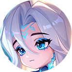 Aurora | ↑ buff | Frost Treasures: Meningkatkan peluang mendapatkan Magic Crystal | teks | |
| Aurora | ↑ buff | Memberikan hadiah acak senilai minimal | 7 → 8 (+14%) | diterapkan server · tercatat di server_patch.json |
Penyesuaian Sinergi
| Item | Arah | Perubahan | Angka | Status |
|---|---|---|---|---|
 Chrono Wanderer Chrono Wanderer | baru | Menambahkan dua Hero: Layla dan Novaria | baru |
Penyesuaian Hero
| Item | Arah | Perubahan | Angka | Status |
|---|---|---|---|---|
 Alpha Alpha | ↑ buff | HP Dasar pada Bintang 1/2 | 5.000/9.500 → 5.400/10.260 (+8%) | diterapkan server · tercatat di server_patch.json |
 X.Borg X.Borg | ↑ buff | Hybrid ATK Dasar pada Bintang 1/2 | 240/365 → 260/395 (+8%) | diterapkan server · tercatat di server_patch.json |
 Gatotkaca Gatotkaca | ↑ buff | Hybrid ATK Dasar pada Bintang 1/2 | 230/345 → 250/375 (+9%) | diterapkan server · tercatat di server_patch.json |
 Karina Karina | ↓ nerf | Hybrid ATK Dasar pada Bintang 2/3 | 215/285 → 200/260 (-9%) | diterapkan server · tercatat di server_patch.json |
 Mathilda Mathilda | ↓ nerf | Hybrid ATK Dasar pada Bintang 2/3 | 155/210 → 145/195 (-7%) | diterapkan server · tercatat di server_patch.json |
Penyesuaian Go Go Card
| Item | Arah | Perubahan | Angka | Status |
|---|---|---|---|---|
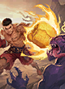 Knockout Punch | baru | ATK Hero Bruiser berpeluang menyebabkan stun ke target | baru | |
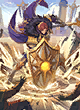 Aftershock | baru | Setiap kali Hero Defender kehilangan HP, mereka memberikan DMG ke lawan di sekitar | baru | |
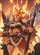 Blazing Valor | baru | Saat memiliki shield, Hero Dauntless akan membesar dan mendapatkan HP & Hybrid | baru | |
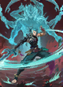 Whirl of Carnage | baru | Hero Weapon Master memberikan DMG ke lawan di sekitar setiap kali menggunakan skill | baru | |
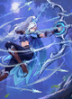 Hail of Shots | baru | Hero Marksman mendapatkan peningkatan ATK Speed pada awal pertarungan yang berkurang secara bertahap seiring waktu | baru | |
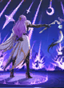 Star Chorus | baru | Saat Hero Stargazer menggunakan skill, mereka juga memberikan DMG ke 2 target tambahan | baru | |
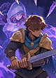 Shrouded Blade | baru | Setelah mendapatkan kill atau assist, Hero Swiftblade memasuki mode Conceal, dan ATK berikutnya memberikan DMG tambahan | baru | |
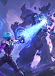 Critical Spellcraft | baru | Skill Hero Mage berpeluang memberikan DMG tambahan | baru | |
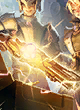 Novel Equipment | ↑ buff | Mendapatkan | 2 → 3 (+50%) | sudah di file game |
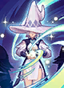 Magic Surge | ↑ buff | Hero baris belakang mendapatkan | 80% → 100% (+25%) | sudah di file game |
| Dimen•innn' Qhnt | ↑ buff | (tanpa keterangan) | teks | |
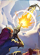 Dimensional Shot Ⅰ | ↑ buff | DMG yang diberikan ke target meningkat sebesar | 4% → 5% (+25%) | diterapkan server · tercatat di server_patch.json |
| Dimensional Shot Ⅱ | ↑ buff | DMG yang diberikan ke target meningkat sebesar | 6% → 8% (+33%) | diterapkan server · tercatat di server_patch.json |
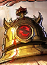 Death Oracle | ↑ buff | Commander mendapatkan | 30 → 35 (+17%) | tidak bisa dipastikan |
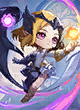 Lunox's Power | ↓ nerf | Lunox's Power: Mendapatkan | 10 → 8 (-20%) | diterapkan server · tercatat di server_patch.json |
| Lunox's Power | ↓ nerf | Saat pertama kali mengaktifkan Sinergi hingga berjumlah 6, mendapatkan | 20 → 18 (-10%) | diterapkan server · tercatat di server_patch.json |
| Angela's Power | ↓ nerf | Hero yang dilindungi menembakkan Love Energy setiap 3 detik, memberikan 120/230/390 | 1640 → 100/190/300/500 (-70%) | diterapkan server · tercatat di server_patch.json |
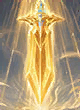 Divine Execution | ↓ nerf | Langsung mengeliminasi lawan dengan HP di bawah | 16% → 14% (-12%) | diterapkan server · tercatat di server_patch.json |
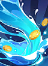 Healing Fountain | ↓ nerf | Mendapatkan | 6 → 4 (-33%) | diterapkan server · tercatat di server_patch.json |
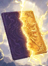 Transmutation | ↓ nerf | Setelah 4 5 babak, Go Go Ca?d ini berubah menjadi Go Go Card Kualitas Oranye acak | teks | |
| Transmutation | ↓ nerf | Setelah | 4 → 5 (+25%) | diterapkan server · tercatat di server_patch.json |
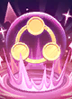 Solid Alliance Ⅰ | - | Dihapus sementara pada season ini | dihapus (server) | |
| Solid Alliance Ⅱ | - | Dihapus sementara pada season ini | dihapus (server) |
Penyesuaian Equipment
| Item | Arah | Perubahan | Angka | Status |
|---|---|---|---|---|
| Equipment Reforger | baru | Gunakan pada 1 Equipment untuk menempanya ulang menjadi 1 dari 3 pilihan baru | baru |
Dampak ke sinergi
 Astro Power Karina ↓ nerf
Astro Power Karina ↓ nerf Bruiser Gatotkaca ↑ buff
Bruiser Gatotkaca ↑ buff- Chrono Wanderer sinergi baru, X.Borg ↑ buff, Gatotkaca ↑ buff
 Dauntless X.Borg ↑ buff
Dauntless X.Borg ↑ buff Enchanted Tales Mathilda ↓ nerf
Enchanted Tales Mathilda ↓ nerf SPECTRE Alpha ↑ buff
SPECTRE Alpha ↑ buff Stargazer Karina ↓ nerf, Mathilda ↓ nerf
Stargazer Karina ↓ nerf, Mathilda ↓ nerf Swiftblade Karina ↓ nerf
Swiftblade Karina ↓ nerf
Screenshot
.png)
.png)
.png)
.png)
.png)
.png)
.png)
.png)
.png)
.png)
.png)
.png)
.png)
.png)
.png)
.png)
.png)